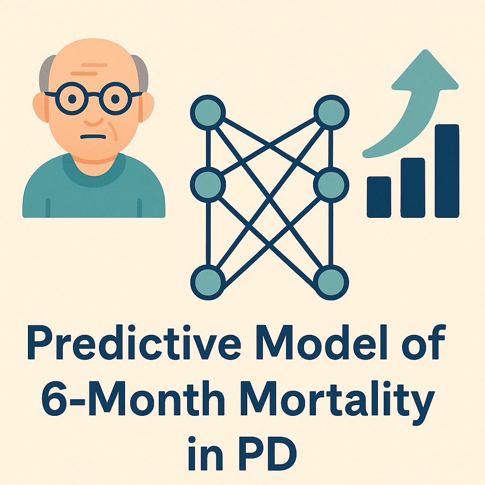
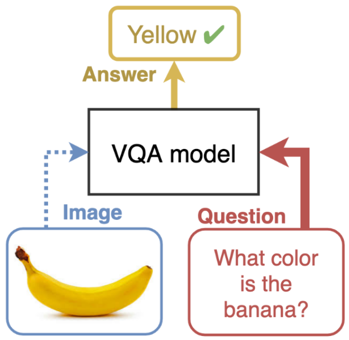

|
Hanzhang (Henry) Yin I am a Master’s student in the Department of Computer Science at Brown University, advised by Prof. Daniel Ritchie. My current research focuses on interactive articulated 3D objects, computer graphics, simulation, and embodied AI. In particular, I am working on asset-level operational logic for objects such as latches, buttons, pedals, timers, interlocks, and coupled joints. I completed my undergraduate studies at the University of Rochester, earning dual B.S. degrees in Computer Science and Applied Mathematics. I also work on medical AI, image/video generation and compression, reinforcement learning, and computer vision. |

|
ResearchMy research interests span computer graphics, interactive 3D worlds, simulation, embodied AI, and machine learning. My current work studies how operational behavior can be represented explicitly and travel with articulated assets across simulation backends. I have also worked on medical AI for Parkinson’s disease prognosis, image/video compression and generation, and computational history of mathematics. |

|
Operational Logic for Interactive Articulated Objects
Hanzhang (Henry) Yin, Advisor: Prof. Daniel Ritchie (Brown University) Research project, Sep 2025 — Present Developing Intrinsic Operational Logic (IOL), a portable asset-level representation for interactive articulated objects. IOL encodes object-local rules such as latches, buttons, pedals, timers, interlocks, joint coupling, and multi-step state-dependent operation. Implemented an object-local update mediator that intercepts simulator-proposed joint updates and can permit, block, clamp, couple, or augment them using grounded propositions, temporal constraints, and conditioned effects. Built an LLM-assisted authoring pipeline with controller synthesis and semantic-trace repair for evaluating operational object traces and embodied interaction tasks. Computer Graphics Articulated Objects DSL LTL / GR(1) LLM Authoring Embodied AI |
|
 |
PRISM: PD End-of-Life Prognostication
Jennifer Corcoran, MD; Hanjia Lyu; Hanzhang (Henry) Yin; Brian McGarry, PhD; Thomas Caprio, MD, MPH; Amy Ogilvie, PhD; Andrew Huang, MD; Jiebo Luo, PhD; Benzi M. Kluger, MD, MS (University of Rochester / URMC) Research project, Feb 2024 — Feb 2026 Developed PRISM, a Parkinson’s-disease-specific machine learning model for 6-month end-of-life prognostication among nursing home residents, addressing the lack of empirically validated PD-specific hospice prediction tools. Built and evaluated Logistic Regression, LightGBM, Random Forest, Naïve Bayes, and Bi-LSTM models across Admission, LongStay, and Panel time-series datasets in collaboration with clinicians at URMC. Compared against Medicare hospice guideline baselines using AUC, sensitivity, specificity, precision, recall, and F1-score, and analyzed feature-selection patterns for clinically interpretable mortality-risk signals. Medical AI Clinical ML Prognostication LightGBM Bi-LSTM |

|
Image Compression and Generation Research
Hanzhang (Henry) Yin, Advisor: Prof. Yan Wang (Tsinghua AIR Lab) Research project, Jul 2024 — Oct 2024 Investigated combining Deep Contextual Video Compression (DCVC) with Diffusion Posterior Sampling (DPS) for codec-style image/video pipelines that integrate compression, denoising, and generative reconstruction. Evaluated on ImageNet-1k using FID and PSNR. Compression Diffusion Models FID / PSNR |

|
The Ancient Roots of Linear Algebra: An Analysis of Rectangular Arrays in Chinese Mathematics
Hanzhang (Henry) Yin, Advisor: Prof. Matthew Dannenberg (University of Rochester) Research project, Jan 2024 — Apr 2024 Studied the development of linear-algebraic reasoning in ancient Chinese mathematics through The Nine Chapters on the Mathematical Art, focusing on the “Excess and Deficits” and “Fangcheng Procedure” chapters. Compared historical rectangular-array methods with modern linear algebra to examine how mathematical representation and elimination-style reasoning evolved. History of Mathematics Linear Algebra Chinese Mathematics |
Internship |
|
KeeperAI
Hanzhang (Henry) Yin Software Development Engineer Intern, Jun 2023 — Aug 2023 Developed and enhanced front-end webpage designs using JavaScript and Fluent UI, integrating external NLP chatbot plugins to facilitate event scheduling within the Microsoft Teams app. Resolved security vulnerabilities in the user login verification module by redesigning regular expressions and improving account-verification logic between the website and database APIs. |
ProjectsSelected implementation-heavy projects from coursework and independent development. These span graphics, simulation, reinforcement learning, computer vision, and visual question answering. |

|
Sand2016 — MPM Sand Simulation with Drucker–Prager Elastoplasticity
Apr 2026 Co-developed a physics-based sand simulator by extending the MATTER MPM framework with a Klar et al.-style Drucker–Prager elastoplasticity model for granular material animation. Implemented return mapping, per-particle hardening, friction-angle control, cone-parameter projection, and scenes for hourglass flow, pouring piles, stick-drag trenches, notched-block collapse, chute, and funnel tests. MPM Physics Simulation Elastoplasticity Computer Graphics |

|
Amazing Terrain — Real-Time Procedural Environment Renderer
Dec 2025 Built a real-time procedural environment renderer featuring fBm/ridged-noise terrain generation, multi-layer PBR material blending, normal mapping, tri-planar texture projection, and animated water. Implemented L-System vegetation with randomized turtle grammar, biome-aware tree placement, and OpenGL instanced rendering, plus weather particles, fog, HDR rendering, color grading, and Bézier camera paths. OpenGL GLSL PBR Procedural Generation L-Systems |

|
Belief-Aware Multi-Agent RL Agent for Partially Observable Battle Arena
Dec 2025 Designed a belief-aware agent for a partially observable multi-agent grid-combat environment with latent strengths, simultaneous actions, stochastic combat outcomes, and global combat broadcasts. Combined Beta-Bernoulli strength posteriors, pairwise combat belief estimation, compact relational state abstraction, and bias–risk-shaped tabular Q-learning; evaluated against baseline and ablated agents across mixed-policy and custom-only arenas. Multi-Agent RL POMDP Belief Modeling Q-Learning |
|
 |
Mini-CLEVR VQA Experiments
Apr 2025 Built a lightweight VQA benchmark on the synthetic Mini-CLEVR dataset with a data generator, clean JSONL schema, and reproducible training scripts. Implemented ResNet-18 + SBERT and CLIP ViT-B/32 + LoRA baselines with a compact fusion head for fast ablations. VQA CLIP LoRA Ablations |

|
Simple QR Code Scanner and Decoder
Apr 2024 Implemented a traditional computer-vision QR scanner with Sauvola binarization, connected-component finder-pattern detection, right-angle geometry for pose estimation, and Kalman-filtered real-time tracking at roughly 20 FPS. Classical CV Real-Time Tracking Kalman Filter |

|
“Awaken”
Sep 2021 A 3D indie game created by a seven-member team during a 48-hour Game Jam hosted by GameChangers 益·游未尽. I worked as a programmer on gameplay and interaction logic. |
More Graphics Click to enlarge
Path
Click to enlarge
PathTracing
Path Tracing
Diffuse, glossy, mirror, and refraction BRDFs with direct lighting importance sampling, Russian roulette, and Extended Reinhard tone mapping.
 Click to enlarge
Geometry
Click to enlarge
GeometryProcessing
Geometry Processing
Half-edge mesh data structure, Loop subdivision, Quadric Error simplification, isotropic remeshing, and bilateral mesh denoising.
Paper
 Click to enlarge
ARAP
Click to enlarge
ARAPDeformation
ARAP Deformation
Cotangent-weight Laplacian, SVD-based rotation fitting, sparse linear system solving, with rotation propagation and parallelized optimization. Based on Sorkine & Alexa, “As-Rigid-As-Possible Surface Modeling.”
Paper
 Click to enlarge
Fluid
Click to enlarge
FluidSimulation
Fluid Simulation
“Stable Fluids”-style incompressible gas solver on an Eulerian grid: external forces, semi-Lagrangian advection with trilinear interpolation, sparse diffusion and pressure-projection solves, and no-escape boundary conditions, with particle and density advection for visualization.
Paper
|
Teaching
|
Other Fun Stuff
|